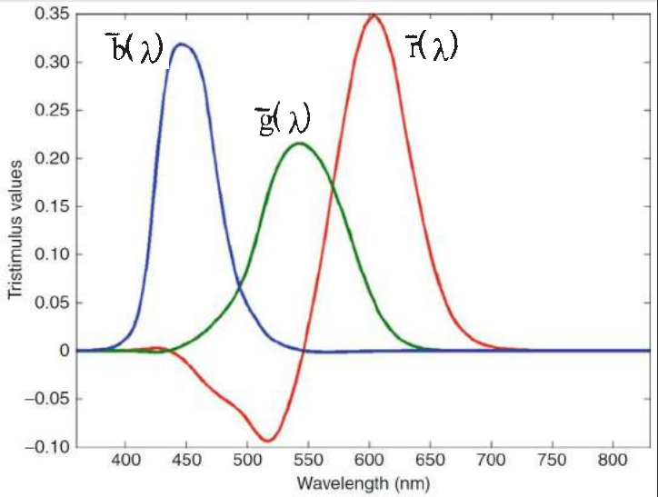
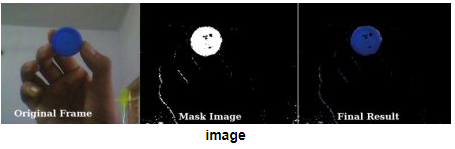

Entender que a cor é um fenômeno percebido - como outras grandezas físicas. Sendo assim, o grande objetivo deste relatório é entender e modificar códigos atrelados a uma webcam para enteder o como a maquina interpreta a cor através dos conceitos colorimetria, utilizando as "matrizes" RGBs

Primeiro passo foi, após utilizar o código obtido no link: Codigo Base
Dado o código acima nosso objetivo era alterar-lo de forma a rastrar objetos utilizando a variaçãos das matrizes RGB e HSV de forma a ressaltar suas cores.
Como mostrado no exemplo abaixo:
Buscando a cor amarela - o resultado obtido foi:"
Primeiras imagens cientificas do James WebbAlém de ser um nerd, sou um Corinthiano apaixonado e por isso deixo aqui nessa pagina um gol do Corinhtians da ultima vez que fui ao estadio: